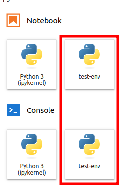

Virutal environment in python#
Sources#
Create#
To create a new virtual environment, use the command python -m venv <path to venv>. This will create a virtual environment in the specified path.
%%bash
mkdir test_fold
cd test_fold
python3 -m venv env_folder
ls
cd ..
rm -r test_fold
env_folder
Activate/deactivate#
From bash (mac/linux) command line:
source <path to venv>/bin/activate
# comands here will use python
# from virtual environment
deactivate
From windows powershell:
source <path to venv>/Scripts/activate
# comands here will use python
# from virtual environment
deactivate
For python script#
So far no way has been found to specify the environment somehow in a python file, so to run a program in a certain environment you must first activate that environment.
%%bash
cd venv_files
# create a new env and install specific version
# of numpy in it
python3 -m venv env_folder
source env_folder/bin/activate
pip3 install numpy==1.23.0 &> /dev/null
deactivate
echo "global numpy" $(pip show numpy | grep Version)
echo "=====no venv activated====="
python3 test.py
echo "=====venv activated====="
source env_folder/bin/activate
python3 test.py
deactivate
rm -r env_folder
global numpy Version: 1.24.2
=====no venv activated=====
numpy version: 1.24.2
=====venv activated=====
numpy version: 1.23.0
Instalation without activation#
Sometimes it is extremely useful to install the Python library in the virtual environment without activating the environment. It can be useful, for example, if you need to set up the environment while building the docker image.
To install python library in virtual environment without environment actication, you should use command like:
<path to venv>/bin/pip install <library name>
In following example:
Creating a python3 program that requires the
requestslibrary;Create a new virtual environment;
Running the program in the new virtual environment will causes an error;
Instaling of the
requestslibrary in the virtual environment;Now running the program in the virtual environment don’t causes an error.
%%bash
cd venv_files
python3 -m venv temp_venv
echo "import requests" > requests_loader.py
echo "print(\"message from python\")" >> requests_loader.py
echo "=====no library instalation====="
source temp_venv/bin/activate
python3 requests_loader.py
deactivate
temp_venv/bin/pip install requests &> /dev/null
echo "=====library instalation====="
source temp_venv/bin/activate
python3 requests_loader.py
deactivate
rm -r temp_venv requests_loader.py
=====no library instalation=====
Traceback (most recent call last):
File "/home/fedor/Documents/knowledge_bank/python/venv_files/requests_loader.py", line 1, in <module>
import requests
ModuleNotFoundError: No module named 'requests'
=====library instalation=====
message from python
Load from requirements.txt#
It should be tedious to manually rewrite installations with pip. So that python libraries and versions can be stored in a file with the typical (but not necessary) name requirements.txt, you can load it automatically using the following syntax:
pip install -r requirements.txt
In the following example:
Create virtual environment;
Install the libraries mentioned in
requirements.txt;And then show the list of libraries in the virtual environment.
Installed exactly the library versions I asked for in requirements.txt.
%%bash
cd venv_files
python3.10 -m venv temp_venv
echo "=====requirements.txt====="
cat requirements.txt
echo
temp_venv/bin/pip install -r requirements.txt &> /dev/null
echo "=====library list====="
temp_venv/bin/pip list
rm -r temp_venv
=====requirements.txt=====
numpy==1.21.0
pandas==1.4.0
=====library list=====
Package Version
--------------- -------
numpy 1.21.0
pandas 1.4.0
pip 22.0.2
python-dateutil 2.8.2
pytz 2023.3
setuptools 59.6.0
six 1.16.0
Copying#
Wrong way#
The wrong way to do this is to just copy the virtual environment folder. It will lead to broken paths for the Python interpreter.
In the following example, I copy the python3 environment from venv1 to venv2, but when I run python from the copied environment and check sys.path, it’s still pointing to the path for venv1.
%%bash
cd venv_files
mkdir venv1 venv2
python3.10 -m venv venv1/venv
cp -r venv1/venv venv2/venv
source venv2/venv/bin/activate
echo "=====sys.path[-1]====="
python3 -c "import sys; print(sys.path[-1])"
rm -r venv1 venv2
=====sys.path[-1]=====
/home/fedor/Documents/knowledge_bank/python/venv_files/venv1/venv/lib/python3.10/site-packages
Correct way#
https://stackoverflow.com/questions/7438681/how-to-duplicate-virtualenv
Using with jupyter notebook#
Add to kernelspec#
For more information, click here.
Create:
Install jupyter in environment
pip install jupyter;Run for environment
ipython kernel install --name "<environment name>" --user;
List all available environments
jupyter kernelspec list;Delete
jupyter kernelspec remove <kernel-name>
The following example shows the use of all the above commands.
%%bash
cd venv_files
python3 -m venv test_venv
echo "=====instalation====="
source test_venv/bin/activate
pip install jupyter &> /dev/null
ipython kernel install --name "test-env" --user
deactivate
echo "=====list available kernels====="
jupyter kernelspec list
echo "====delete test_environment====="
jupyter kernelspec remove -y test-env
rm -r test_venv
=====instalation=====
Installed kernelspec test-env in /home/fedor/.local/share/jupyter/kernels/test-env
=====list available kernels=====
Available kernels:
python3 /home/fedor/.local/share/jupyter/kernels/python3
test-env /home/fedor/.local/share/jupyter/kernels/test-env
====delete test_environment=====
Removed /home/fedor/.local/share/jupyter/kernels/test-env
Note after reloading for example jupyter lab you will have refreshed list of kernels.

Run from environment#
When you run jupyter ... in your system, it will run from the base system python, whether or not any environment is enabled. But jupyter is actually just a Python runnable package, and you can do python3 -m jupyter ..., in which case it will use the appropriate environment to run a jupyter ....
I can’t show it using notebook cells. But you should use such commands:
# create environment
python3 -m venv some_venv
# activate environment
source some_venv/bin/activate
# install jupyter
pip install jupyter
# run jupyter using direct call of jupyter from python
python3 -m jupyter lab